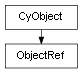

class cymel.core.cyobjects.objectref.ObjectRef¶

-
class
cymel.core.cyobjects.objectref.ObjectRef¶ ベースクラス:
cymel.core.cyobjects.cyobject.CyObjectCyObjectの参照が切れていても再取得が可能な弱参照ラッパー。これ自身も
CyObjectであるため、参照先を得ずとも、 基底でサポートする範囲でオリジナルのようにも振る舞える。Methods:
internalData()内部データを返す。 newObject(data)内部データとともにインスタンスを生成する。 node()ノードを得る。 object()弱参照が切れていなければオブジェクトを得る。 refclass()ラップしているオブジェクトのクラスを得る。 refdata()ラップしているオブジェクトの内部データを得る。 weakref()弱参照を得る。 Attributes:
Methods Details:
-
internalData()¶ 内部データを返す。
派生クラスで内部データを拡張する場合にオーバーライドする。 その場合、
newObjectクラスメソッドもオーバーライドし、 拡張に対応させる。内部データはブラックボックスであるものとし、 拡張データでは基底のデータも内包させる必要がある。
-
classmethod
newObject(data)¶ 内部データとともにインスタンスを生成する。
内部データはブラックボックスであるものとし、 本メソッドをオーバーライドする場合も、 基底メソッドを呼び出して処理を完遂させなければならない。
内部データを拡張する場合は
internalDataも オーバーライドすること。パラメータ: - cls (
type) -- 生成するインスタンスのクラス。 - data -- インスタンスにセットする内部データ。
戻り値の型: 指定クラス
- cls (
-
refclass()¶ ラップしているオブジェクトのクラスを得る。
-
refdata()¶ ラップしているオブジェクトの内部データを得る。
-
weakref()¶ 弱参照を得る。
戻り値の型: weakref.ref
-